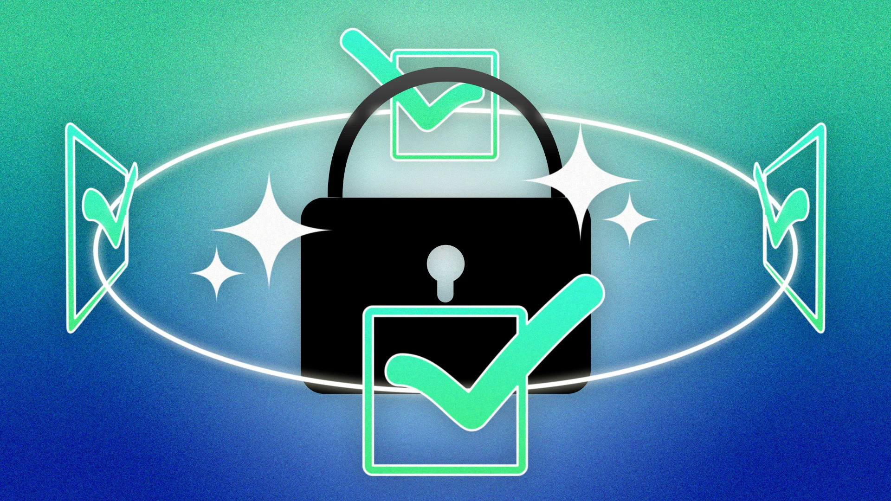

How Can You Protect Yourself From Data Collection?
November 10, 2024
There are a few ways for you to lessen the amount of data that you hand over to companies, some are quite easy, but some require a bit more of a technical background.
Opting out of Cookies
The easiest method to reduce the amount of data that you give is when you are given the prompt of whether to accept all their cookies when visiting a website, click on the button that is typically called “configure cookies” that should be next to the “accept all” button, and then turn off all the cookies from being collected. This essentially gives the website less cookies that they can get to track you.
Delete Browsing Data
Deleting your browsing data in your browser settings will delete numerous amounts of data, but it will mostly be your browsing history, your cookies and site data, and also images that you had saved while using your browser. Although this won’t directly “protect” you, it helps remove the retargeted ads that you receive when browsing on other websites.
Use an Ad Blocker
Ads are free tools that you can use to help get rid of those pesky advertisements while using the internet. They help filter specific content depending on what rules the user has set, and some ad blockers out there even block small tracking pixels from collecting data from you.
Use a VPN
VPN, or a Virtual Private Network, is an excellent tool to hide your activity while using the internet. A VPN masks your IP address by allowing the network to redirect it through a special server created by the VPN host, meaning that while using a VPN, your data will come from the VPN server. This makes it so that your Internet service provider or anyone else cannot see what you’re doing.
Several benefits come with using a VPN. For someone to read your data, they would need a key that allows them to do so, this makes it so you can browse safely even on public networks, which are known to be a hazard when it comes to online privacy. Another is that you will have access to content from other countries. For example, if are you located in China, which is known for its Great Firewall that blocks outside connections, if you have a good VPN, you can still get around it and access Western media.
Conclusion
All in all, a VPN is a great tool to protect your privacy when browsing the internet. It helps hide your activity from internet service providers, and any malicious third parties since for anyone to be able to read your data, they would need a key, but they would not have access to it, and trying to brute force it would take forever.
placeholder for quiz
placeholder for citations